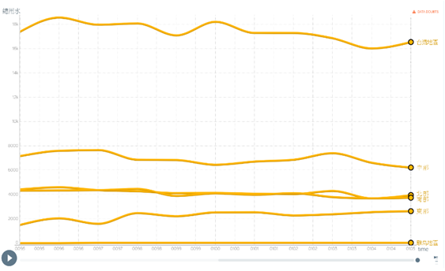

分析
analysis
（一）台灣降水時空分布（圖一）：
此為提出四個地區代表縣市，將其歷年每月降雨量平均後所繪製而成的圖表(統計時間：民國70-99年；單位：毫米)
1.雨量：
得知一年中五、六、七月降雨量較大，搭配氣象觀測資料後得知原因在於，這段時間為梅雨季和颱風較易形成的夏季。
2.地區：
台北地區因迎東北季風的關係，年初的雨量較其他地區大，年度的起伏較小；平均降雨量最大值及最小值都出現在高雄地區，依圖能夠解釋為何缺水的情況多半發生在冬末春初的南部地區。
(圖一)台灣降水時空分布
（二）台灣用水趨勢（圖二－１、２）：
1.總用水量逐年減少，但趨勢不大。
2.耗水最多在於農業上的使用。
3.總用水量最大的地區為中部，而非人口最多的北部地區。根據圖表得知原因在於，中部地區農業用水量居全台之冠，且大過其他用途之用水量，故為加總後最大之數值。
(圖二-1)台灣用水趨勢
(圖二-2)台灣用水趨勢
（三）每人每日平均用水量（圖三）
平均生活用水量隨生活水準提升而增加，又因政府推動節約用水而減少，使數據逐漸平緩。
如圖，民國 70 年至民國 90 年間之每人每日平均用水量呈逐年遞增的趨勢，此後的用水量開始下降，至近十年時趨於穩定。
(圖三)每人每日平均用水量